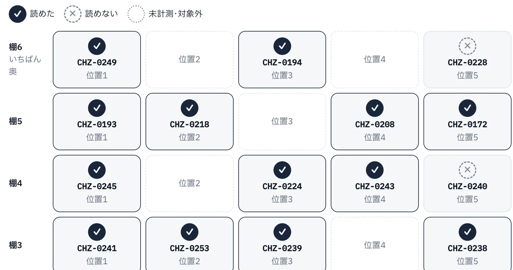
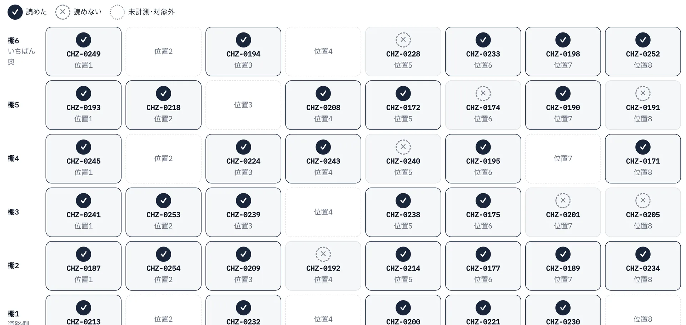

同じ範囲を、何度か読んで比べる
お客様の貯蔵庫で、試験用のタグを使い、同じ範囲を何度か読んで、棚・段・位置ごとの結果を比べます。読みにくい棚は、タグの QR や樽の番号と、置き場所の記録で管理する形を一緒に考えます。お使いになりたい Android 端末も、このときに実機で確かめます。簡易検証は有償です。費用は、場所と範囲を伺ってからご案内します。
読み取れる距離や確実さは、タグと貯蔵庫の置き方で変わります。

ベータ版
Particle design株式会社の「CASK / BARREL」は、ウイスキー蒸溜所とワイナリーの貯蔵庫で、樽の置き場所、棚卸しの結果、測った液量と度数を、樽ごとに確かめられる樽の管理サービスです。ベータ版を最初にお使いいただく蒸溜所とワイナリーを募集しています。まずはヒアリングで、樽の数や置き方、いまの記録のつけ方、どのくらいの規模から始めたいかを伺います。

ベータ版で試せること
だれを募るか
日本国内のウイスキー蒸溜所とワイナリーを募集しています。海外の蒸溜所・ワイナリーの方は、ご相談ください。
流れ
機器の一式
簡易検証
お客様の貯蔵庫で、試験用のタグを使い、同じ範囲を何度か読んで、棚・段・位置ごとの結果を比べます。読みにくい棚は、タグの QR や樽の番号と、置き場所の記録で管理する形を一緒に考えます。お使いになりたい Android 端末も、このときに実機で確かめます。簡易検証は有償です。費用は、場所と範囲を伺ってからご案内します。
読み取れる距離や確実さは、タグと貯蔵庫の置き方で変わります。

ヒアリングは、すぐに始められます。簡易検証は、ヒアリングのあとで日程をご相談します。導入は、当社の準備が整いしだい、順にご案内します。
樽に貼るカスク用 RFID タグ、RFIDリーダー、現場アプリを入れる Android 端末です。ラボの瓶には、液体対応 RFID タグを使います（瓶の機能は開発中）。枚数と台数は、ヒアリングと簡易検証のあとで一緒に決めます。
いいえ。動作を確かめた機種をご案内します。お使いになりたい機種がある場合は、簡易検証のときに実機で確かめます。
いまご案内している RFIDリーダーは、使う方の名義で無線局の登録が要ります。手順はご案内します。
樽の数、貯蔵庫の数、使う範囲で変わります。サービス利用料と、タグ・機器、簡易検証、導入の支援に分けてご案内します。サービス利用料は、タグと機器をご購入いただいたうえで、導入から一定の期間は無償です。
買っていただく前に、簡易検証で、お客様の貯蔵庫で読めるかを確かめます。読めると分かってから、タグと機器を決めます。簡易検証は有償です。費用は、場所と範囲を伺ってからご案内します。
当面の募集は、日本国内の蒸溜所とワイナリーです。海外の蒸溜所・ワイナリーの方は、ご相談ください。
始められる規模には目安があります。樽の数と、これから増える見込みを伺って、ご相談します。
お問い合わせフォームが開きます。相談テーマは「CASK / BARREL（アーリーアダプター・ヒアリング）」をお選びください。選べない場合は、お問い合わせ内容に「CASK / BARREL」とお書き添えください。